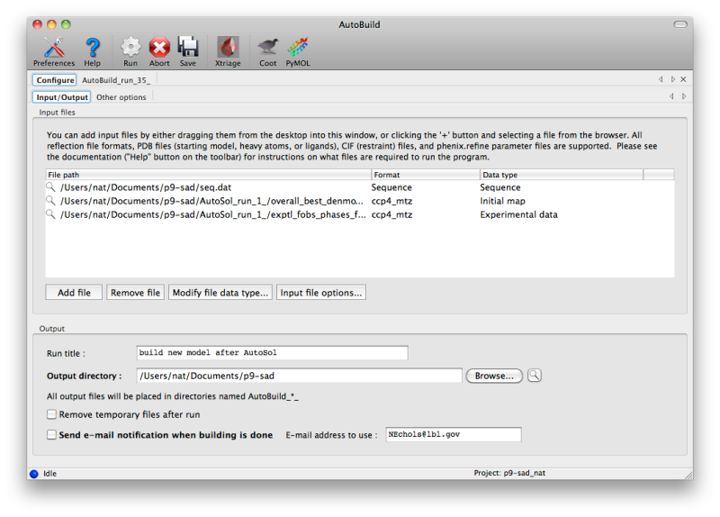
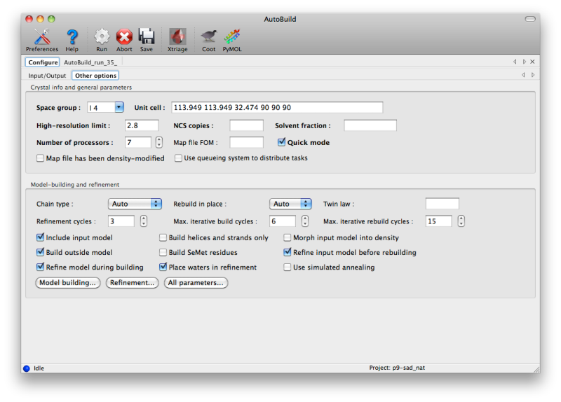
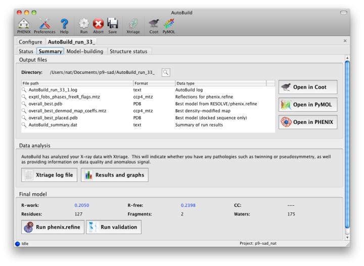
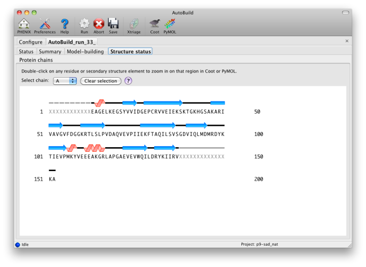
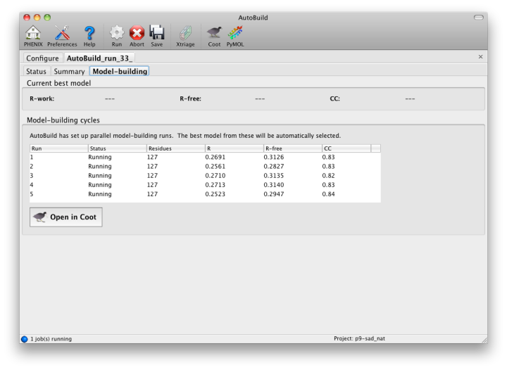
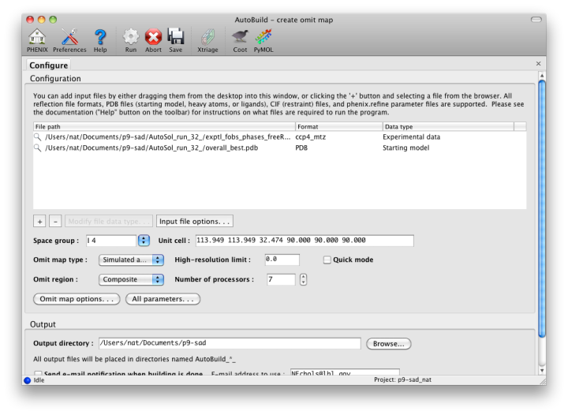
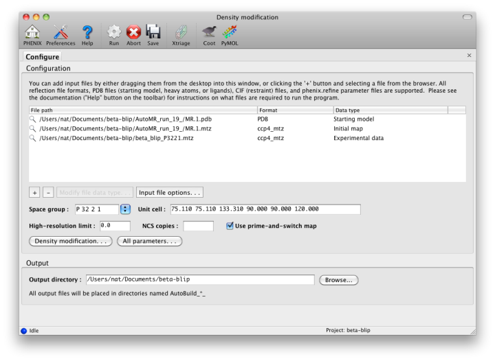

NOTE: this document is mainly an introduction for users who are not familiar with AutoBuild (or the GUI), rather than a comprehensive reference for the program. The documentation for the command-line version covers the full range of options and functionality.
AutoBuild is the main model-building program in PHENIX; it combines density modification and chain tracing in RESOLVE with phenix.refine to generate a high-quality model. It is optimized to be very thorough by default, and as a result is one of the most processor-intensive programs in PHENIX. Most common protocols can be parallelized over an arbitary number of processors or cluster nodes, however. If you need a faster alternative, there are several simpler building programs in PHENIX:
- phenix.find_helices_strands performs very fast secondary structure fitting and chain-tracing. It will generate a partial protein (or nucleic acid) backbone in a few minutes (depending on processor speed) but performs no refinement or sequence docking. This method tends to work well for low-resolution maps, and AutoBuild has a similar mode.
- phenix.fit_loops docks small protein loops missing from an incomplete model into electron density. It can perform simple real-space refinement to clean up the structure.
- phenix.phase_and_build is essentially the model-building component of AutoSol, and like AutoBuild, it performs iterative density modification, model-building, and refinement. It is still substantially faster than AutoBuild, usually at the cost of a few percent higher R-factors. Currently only available as a command-line program.
Several other programs have features similar to functions in AutoBuild; in particular, phenix.refine includes simple local rebuilding for sidechain rotamers. Ligand placement is done separately in the LigandFit wizard.
A tutorial video is available on the Phenix YouTube channel and covers the following topics:
Like several other programs in PHENIX, the AutoBuild GUI can accept a variety of files in bulk; it is also designed to be started directly from other programs (e.g. the AutoSol and AutoMR wizards) with files pre-loaded. At a minimum, it requires experimental amplitudes and a source of phases (PHI/FOM columns in the MTZ file, or a partial model), and works best when supplied with the sequence(s) to be built. If Hendrickson-Lattman coefficients or R-free flags are present in the reflections file(s), these will be used as well. Additional files for starting map coefficients and high-resolution data are optional. (An example of the latter would be building into an isomorphous native dataset after solving a SeMet SAD/MAD structure in AutoSol.)

AutoBuild is limited to building one chain type at a time (protein, DNA, or RNA), and performs no ligand fitting (the LigandFit wizard should be used for this). However, additional chains may be included as a "ligand file", which contains any existing parts of the model that you want AutoBuild to leave untouched (it will still be used in refinement). For non-standard ligands, you will need to include CIF files. Custom settings for phenix.refine (i.e. the ".eff file") may also be supplied.
If you are running AutoBuild directly from experimental phasing, the PDB file containing heavy atoms should be included. For selenomethionine-derivatized proteins, the heavy atom sites will be used to anchor the methionines in the sequence. AutoBuild can also be directed to build actual SeMet residues in place of Met.

AutoBuild has two different modes for using an PDB file supplied as a starting model, set by the "Rebuild in place" control. By default, if the sequence identity versus the supplied sequence file is at least 50%, the model will be rebuilt as necessary and refined without adding or removing atoms ("Auto" or "True"). If False (or if sequence identity is low), the model will be used as a source of phasing information but a new model will be built into the density-modified map. You can still incorporate parts of the initial model by checking the "Include input model" box. Currently, if you want to extend an existing model without removing any of the input atoms, we recommend using phenix.fit_loops instead.
General options:
- Twin law determines whether twinned refinement should be performed. If you have a noticeably twinned structure this is essential to obtain interpretable maps.
- Include input model is only relevant when rebuild-in-place mode is not used; if true, the input model will be combined with the autobuilt model using the best segments of each.
- Build outside model will only add new residues outside of the existing model.
- Refine model during building runs phenix.refine between each cycle of model-building; this adds to the runtime but is strongly recommended as it will always lead to a better final model.
- Build helices and strands only will only place secondary structure elements. This is most useful at lower resolutions.
- Build SeMet residues places SeMet instead of Met residues (as dictated by the sequence file).
- Place waters in refinement uses the ordered_solvent option in phenix.refine; this is highly recommended at medium-to-high resolution (better than 3.0A).
- Morph input model into density tries to move the model to match the density-modified map before rebuilding and refining. This is often an effective method to improve poor MR solutions.
- Refine input model before rebuilding will run phenix.refine first; this should be unchecked if you have just come from refinement.
- Use simulated annealing turns on the Cartesian-space simulated annealing during refinement. This adds significantly to runtime, but can often improve convergence and fix building mistakes.
To build as thorough a model as possible, AutoBuild will spawn many similar processes, each of which will produce a slightly different result (depending on build options and random number generation). This can be disabled by checking the "Quick mode" box, but the parallel builds typically result in more residues placed and a few percent lower R-free. As many processors as are available may be utilized, although for building only three or four processes will be run at a time. The GUI will automatically set the maximum number of processors to one less than are present in the system (or just one for older, single-core machines).
This type of parallelism is very well suited for execution across a cluster, and AutoBuild supports spawning of processes using a queuing system such as Sun Grid Engine (SGE). To enable this method, open the Preferences, switch to the "Processes" section, and click the box labeled "Activate queuing system support", then re-launch the AutoBuild GUI. Another control will now appear labeled "Use queuing system to distribute tasks". If this is checked, all child processes will be submitted to the queue instead of being run locally. Note that this is independent of the option to run the entire AutoBuild process on the cluster, which only appears when the "Run" button is clicked. Both options may be combined, but only if the cluster setup allows submitting jobs from the individual nodes.
For composite omit map generation (described below), the parallelism is even more effective, since each omitted box can be processed separately.
As soon as AutoBuild starts running, a new tab will appear for the current job. This will be divided into sub-tabs, starting with job status and console output. A second sub-tab will display a list of output files and additional results as they appear; these will include the Xtriage report on the experimental data, which can be loaded into the GUI by clicking the "Results and graphs" button. Once maps and a model are available, clicking the Coot or PyMOL buttons will load these into the desired viewer.

The map file will be named overall_best_denmod_map_coeffs.mtz, which contains only an mFo map (FOM-weighted F(obs), and possibly anisotropy- corrected). Users who want difference maps like those produced by phenix.refine should run the separate phenix.maps GUI. AutoBuild will output two PDB files, one containing all built residues (overall_best.pdb), and one with only those residues for which the known sequence could be docked (overall_best_placed.pdb). The final tab, "Structure status", will display a schematic of the sequence and secondary structure for each chain.

While the wizard is running in parallel build mode, the "Model-building" tab will show the progress of the individual jobs. Although the output of these should not be used since a higher-quality final consensus model will be assembled by AutoBuild, you can view the current model for any job by selecting from the list and clicking the Coot button.

For clarity, the omit map functionality has been moved to a separate GUI, with similar behavior but different configuration options.

Omit maps may be generated for either a specific (usually small) region of the structure, such as a ligand or problematic loop, or a composite of the entire structure. In the latter mode, the program will iterate over boxes covering the unit cell, calculate maps for each box with the atoms inside left out, and assemble a complete map at the end. (Note that an omit map for a specific region could also be generated manually by deleting part of a model or setting the occupancies to zero, then running phenix.refine.)
Because of the interdependency of all reflections and all atoms, re-calculating maps immediately after deleting atoms does not reliably remove phase bias. The "Omit map type" control offers three choices for handling the partial models ("Simple", "Simulated annealing", and "Iterative build"); the first will run phenix.refine with simple minimization and ADP refinement alone. A much more thorough method of removing bias is a simulated annealing omit map, which allows the structure to escape local minima. (Currently this only supports the Cartesian dynamics; torsion angle SA will be available in a future version.) A third, even more robust option is the iterative build omit map, which rebuilds the partial structure. In addition to thoroughly removing bias, the resulting models provide an estimate of uncertainty for atomic coordinates.
The main disadvantage of these methods is the long running time especially for the iterative build omit maps. However, because AutoBuild is highly parallel, we recommend always using the simulated annealing or iterative build options. If you only want to generate figures for publication, specifying a region of the structure to leave out will be more efficient than running the full composite omit map calculation.
A third variant of the AutoBuild GUI is dedicated to generating density modified maps with no additional building. This version of the GUI is single-processor only, but runs in much less time than the more advanced versions. Users who wish to create a prime-and-switch map after molecular replacement should use this interface. Note that if an input model is supplied, the default behavior is still to run refinement first, which considerably increases runtime. (This can be disabled by checking the "Refine model" box.)

The ` density modification tutorial video <https://www.youtube.com/watch?v=_BK2ETHuZhU>`_ is available on the Overall Phenix YouTube channel and covers the following topics: